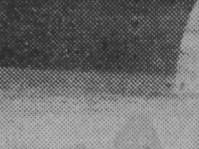
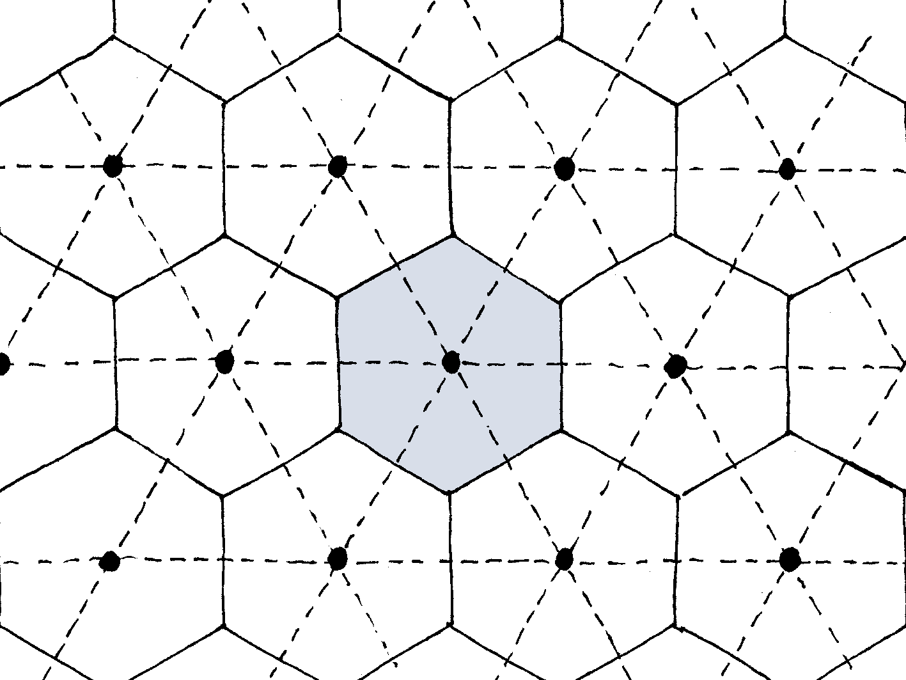

In the previous instalment of this series, we introduced homogenization and the separation of scales. In the present post, we will discuss two strategies to carry out homogenization: the experimental and the theoretical approaches. To do so, we will again use the analogy with the halftoning technique.
Remember that we considered the following picture, reproduced from Le Journal (thursday, may 30th, 1935).

Taking a closer look at the prow:

we realized that what looked like shades of gray in the photograph was actually a dotted structure. This dotted structure will be called the microstructure; its typical length-scale is the microscopic length-scale \(L_μ\) that was introduced before.
Now, let us imagine what happened when this photograph was actually printed alongside the article about the launch of the ocean liner Normandie. The printer was handed out the original photograph (which is indeed made of shades of grays, not black dots) and had to pick the dot pattern(s) that would result in the best halftone reproduction of the photograph. To do so, he needed a rule that relates the dot pattern to the resulting shade of gray.
This is what homogenization is really about: homogenization provides a mapping from the microstructure to the effective properties.

Our friend the printer first performed the required homogenization step experimentally. As the problem at hand is about human perception, he asked his apprentice to be the subject of his experiment. He handed out a set of cards, uniformly coloured with various shades of gray, to the apprentice. Then, he presented him with various dot patterns. For each of these patterns, the printer asked the apprentice to pick the card that was closest to how he perceived the pattern. The printer was then able to build a chart that related pattern to shade of gray (and vice-versa).
But then, the printer realized that this experiment is fundamentally subjective. In order to be statistically representative, he needed to repeat this experiment with many subjects, and compute some kind of average. He thought that this was quite tedious, and maybe there was another strategy.
In fact, there is another strategy, which is called upscaling. In this approach, the effective properties are inferred (through a mathematical model) from the microstructure. In the case of halftoning, the mathematical model is rather simple, as it boils down to a simple average. More precisely, we first need to realize that the dot pattern is periodic: it is the result of paving the plane with a single unit-cell, a hexagon in the present case (see figure below, where the unit-cell is shown in gray).

The total surface area of the unit-cell is \(A\), and the surface area covered by the black dot(s) is \(A_{\mathrm{b}}\). The surface area \(A_{\mathrm{w}} = A - A_{\mathrm{b}}\) remains white. Then, the upscaling rule reads
\[ G^{\mathrm{eff}} = \frac{A_{\mathrm{w}}}{A}, \]
where \(0 ≤ G^{\mathrm{eff}} ≤ 1\) denotes the effective gray level (\(G^{\mathrm{eff}}=0\): black; \(G^{\mathrm{eff}}=1\): white). The above upscaling rule can be seen as a form of rule of mixtures. Indeed, let \(G_{\mathrm{b}} = 0\) and \(G_{\mathrm{w}}=1\) denote the gray levels of black and white, respectively. Then, the effective gray level is expressed as the following weighted average of the local gray levels
\[ G = \frac{A_{\mathrm{b}}}{A} G_{\mathrm{b}} + \frac{A_{\mathrm{w}}}{A} G_{\mathrm{w}}, \]
where the weights are the surface fractions. This is in fact a rare example where the rule of mixtures gives the correct answer! It is time to wrap up.
Conclusion
Homogenization is the process that relates the microstructure to the macroscopic properties. This relationship can be established experimentally or theoretically. These two strategies should not be seen as competing, but rather as complementary approaches to the same problem.
On the one hand, provided that the experiments are performed correctly, the experimental approach always delivers the “correct” answer. However, a new experiment is required for each new microstructure.
On the other hand, theoretical (upscaling) approaches have the ability to be predictive: given the microstructure, the effective properties can be computed with no need to actually build the microstructure. This is particularly desirable in an industrial context, where numerical modelling is gradually supplanting physical testing. The downside is that all the relevant physics must be accounted for at the scale of the microstructure. While this is relatively easy in the case of e.g. linear elasticity of composites, it is a much more difficult task in the case of e.g. linear elasticity of unsaturated porous media, where we need to account for all menisci.
In my research, I preferably resort to theoretical homogenization, to which the remainder of this series will be devoted. In the next instalment, we will discuss periodic vs. random homogenization.